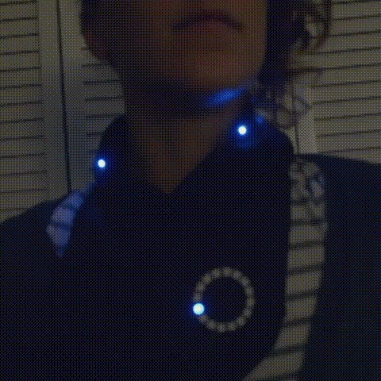

Mostly selfies ✌
I painted this bird on a tent I made. Later I made it sort of glitchy/trippy.
Sometimes I design knitting and crochet patterns.
For about 6 months, I designed a bunch of baby sweater patterns. Like a lot, 50+ baby sweaters. It turned out to be sort of a dumb idea, but these are the best ones.
In 2011 I was invited to participate in a trash fashion show, so I made this fused plastic bag dress and knit this dress out of plastic bag yarn.
For several years, I did some production for the artist Sheila Klein under her direction. These are a few detail shots of some of her pieces that I had the opportunity to work on that I am particularly fond of.
I made this shirt that is bluetooth controlled and runs on gif based animations. It's pretty neat.
Shortly after I made that scarf I made this vest, but it was always pretty flickery so I ended up recycling the leds into a different project.
These are some other led projects I made, because bright blinky things just make the world a happier place.


I made a persistance of vision kit from Adafruit and messed around with it for awhile, which was fun.
I also made a pigrrl from another Adafruit kit. It was fun to build but kind of lackluster to play with so I disassembled it and used the components for other projects.
This was my first e-textile project, done for the Bellingham Foundry
I have a lot of projects on my GitHub. Here are some selected ones.
* I've taught a few workshops to kids using processing, and made this little paint program as an example for a project.
* One day I got super excited about making a pants pattern generator for knitters. My enthusiasm was more for the website itself than the actual generator and only lasted for about a day and a half, so I never finished it. But some day I might.
* Arduino code for led projects. These are all built off of other people's code, mostly from Adafruit.
These are some sites I've done front (and back) end development on
This is a very random selection of some design type things I've worked on.

I designed some earrings in Inkscape. I had the pieces laser cut out of wood, and I stained and hand assembled them.
Published papers I've contributed to:
Exploring Protein Cavities through Rigidity Analysis
InProceedings of ACM-BCB '17, Boston, MA, USA, August 20-23, 2017
Investigating Rigidity Properties of Protein Cavities
Molecules 23.2 (2018): 351.
This poster relates to the above research, and won the 2017 ACM Undergraduate Research Competition at Grace Hopper Celebration
An unfinished website that was used in these projects to create multidimensional plots, created with D3.js
Occasionally I like to do fancy makeup.
Some funny illustrations I made for other people.
An illustration I made for an old blog, which is a pretty accurate snapshot up my life at the time.
![an illustration of stephanie riding a bicycle down a road. There is a small grey rooster on her handle bars and yarn trailing out of a basket attached to the back of her bike. There is a fat pigeon holding a banner also attached to her bike with the words 'un petit squab' written on it. She has two dogs following her down the path, and at the end of the path is a tiny house on a trailer with her partner, Jason and a few more chickens next to it. There is text at the bottom of the illustration that reads, 'a blog of creative endeavors.'](images/art/illustrated-header.jpg)
For awhile I was in the circus, and I did contortion. I wasn't very good but I had a few neat tricks I could pull off.
I briefly got really obsessed with doll "face-ups" and wanted to start doing doll repaints myself. I did one repaint, which turned out pretty good, and was then over it.